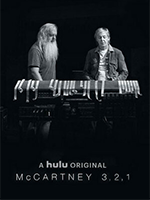
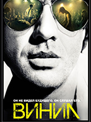
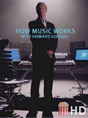

Документальный сериал о творчестве Пола Маккартни и легендарной группы The Beatles. Вместе с музыкальным продюсером
Риком Рубиным Маккартни анализирует классические композиции «ливерпульской четверки». Герои обсуждают историю и феномен
группы, говорят о новаторстве коллектива, рок-сцене 1970-х годов и полувековой карьере Маккартни как сольного артиста.
Хэйли Ратледж — молодая девушка, закончившая филармонию по классу гобоя и мечтающая играть в симфоническом оркестре
Нью-Йорка. Данный коллектив переживает очень сложные времена и старый дирижер, Томас Пэмбридж, решил покинуть его. На
смену ему пришел Родриго ДеСуза — талантливый и амбициозный молодой человек, который решил не только обновить состав
музыкантов, но и репертуар. Теперь у Хэйли появилась прекрасная возможность осуществить свою мечту. Однако в жизни все
дается не так просто, как хотелось бы.

Про музыкальную индустрию 70-х. Владелец разоряющегося лейбла American century Ричи Финестра общается с известными и не
очень музыкантами (от Led Zeppelin до вымышленной группы Nasty Bits), продюсерами, радиоведущими и другими не последними
людьми. Солнце рок-н-ролла подходит к закату, скоро на сцену вылезут хип-хоп, панк-рок и другие музыкальные правления,
чье время только наступает.

Как устроена музыка
Как устроена музыка рассказывается в четырехсерийном британском документальном фильме Говарда Гудала (Howard Lindsay
Goodall CBE).Состоит фильм из четырех частей:мелодия, ритм, гармония, бас.